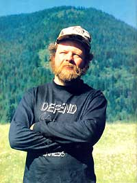

STAFF PHOTO
The infamous U.S. Steel ""rug splash."" The sign left by The Fox reads, in part: ""To: President and Board of Directors USS. This award is presented to you in recognition for your outstanding contributions to our environment and its inhabitants. . . . Our death and the systematic destruction of our habitat is indeed a small price to pay for such noble enterprise. ""